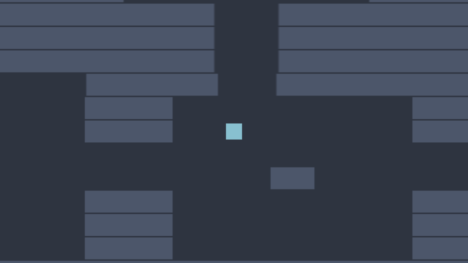
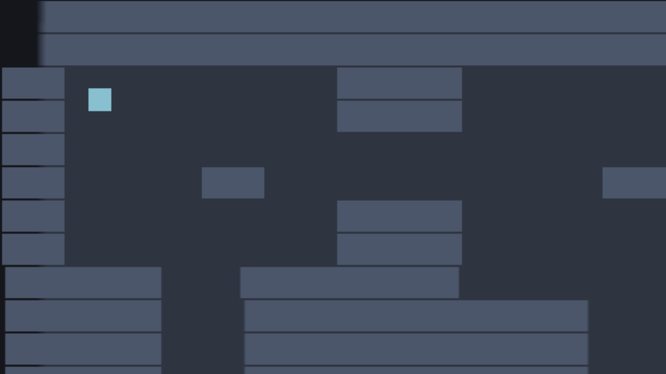

T57 Nord Dungeon 3: Camera and a bigger level
Part 3 of the native-scripting dungeon series. It continues from part 2, walls. Allow 40 minutes.
What you will build: a 40 × 22 tile dungeon with six rooms and corridors, much bigger than the screen, and a camera that follows the hero smoothly and never shows the empty space outside the level.

Download: Part 3 project, also in examples/series-dungeon/part3.
1 A bigger map#
Replace scripts/map.js with the dungeon of this part (forty columns, twenty-two rows, 1280 × 704 pixels). Rooms are the . areas, corridors join them and P is the start in the top-left room:
export const MAP = [
'########################################',
'########################################',
'##........####..........#####.........##',
'##........####..........#####.........##',
'##...............................##...##',
'##....##..........###.................##',
'##........####..........#####.........##',
'##........####..........#####.........##',
'#####..#######..........#########..#####',
'#####..###########..#############..#####',
'#####..###########..#############..#####',
'#####..###########..#############..#####',
'##..........######..##########........##',
'##..........####..........####........##',
'##..........####..........####........##',
'##....##..........................##..##',
'##..................##................##',
'##..........####..........####........##',
'##..........####..........####........##',
'##..........####..........####........##',
'########################################',
'########################################',
];Nothing else in the project changes yet. Play it: the hero walks in a world three times wider than the screen and … the camera stays where it is, so the hero walks off the screen. We need a camera script.
2 What a camera is#
The camera component on the Camera entity shows the part of the world around the entity's position. To follow something, move the camera entity. No special engine feature is needed, a script is enough.
Create scripts/follow.js:
import { NordScript } from 'nord';
export default class Follow extends NordScript {
static attributes = {
target: { type: 'string', default: 'Hero', label: 'Name of the entity to follow' },
stiffness: { type: 'number', default: 8, min: 0, label: 'Follow speed (0 = snap)' },
viewport: { type: 'vec2', default: [640, 360] },
};
start() {
this.target = this.scene.find(this.attrs.target);
this.bounds = null;
// the level announces its size once it has built itself
this.off = this.events.on('level', (size) => { this.bounds = size; this.snap = true; });
}
lateUpdate(dt) { // after every update(): the hero has already moved this frame
if (!this.target || !this.bounds) return;
const [hw, hh] = [this.attrs.viewport[0] / 2, this.attrs.viewport[1] / 2];
const goalX = Math.max(hw, Math.min(this.bounds.width - hw, this.target.pos[0]));
const goalY = Math.max(hh, Math.min(this.bounds.height - hh, this.target.pos[1]));
const [x, y, z] = this.entity.pos;
const k = this.snap || !this.attrs.stiffness ? 1 : 1 - Math.exp(-this.attrs.stiffness * dt); // frame-rate independent smoothing
this.snap = false;
this.entity.pos = [x + (goalX - x) * k, y + (goalY - y) * k, z];
}
onDestroy() { this.off?.(); }
}Add it to the Camera entity and leave the target at Hero.
lateUpdate(dt)runs after everyupdateandfixedUpdateof the frame. The camera must read the hero's position after the hero has moved, or it follows the previous frame and the picture shakes.- Bounds. The camera centre may only go as far as half a screen from each map edge, otherwise we would see the void outside the level.
goalXis the hero's x clamped to[hw, width − hw]. - Smoothing.
x + (goalX − x) * kmoves a fractionkof the remaining distance each frame: quick when far, slow when near, which looks natural.
Why
1 - Math.exp(-stiffness * dt)and not juststiffness * dt? Withk = stiffness * dtthe camera follows differently at 30 and 144 frames per second, and above1 / dtit overshoots. The exponential form gives the same result for any frame rate, andkcan never exceed 1. This one-liner is worth copying into every game.
3 Telling the camera how big the level is#
The camera needs the map size, which only Level knows. Do not make the camera import the level: scripts should not be glued to each other. Use the event bus instead. At the end of Level.start:
this.events.emit('level', { width, height });and the camera listens for it in its own start:
this.off = this.events.on('level', (size) => { this.bounds = size; this.snap = true; });this.events is a game-wide message board: anyone can emit a named event with some data, anyone can on it. on returns a function that unsubscribes, which is why onDestroy calls this.off?.(). this.snap = true makes the first frame jump straight to the hero instead of sweeping across the map.
What if the camera script starts after the level has finished? The level
awaits many spawns, so it always finishes later. If you ever need a guarantee, let the receiver ask instead: store the data on the sender and read it instart. For this series the order is safe.
4 Merging walls#
Make the Level script a better citizen. The last version created one entity per #. This map has 449 wall tiles. Our row-by-row loop merges horizontal runs of walls into one wide entity:
import { NordScript } from 'nord';
import { MAP } from './map.js';
const sprite = (w, h, tint) => ({ type: 'sprite', texture: 'assets/sprites/square.png', size: [w, h], tint, alpha: 1 });
const data = (name, tags, x, y, z, components) => ({ name, tags, transform: { pos: [x, y, z], rot: [0, 0, 0], scale: [1, 1, 1] }, components, scripts: [], children: [] });
export default class Level extends NordScript {
static attributes = { tile: { type: 'number', default: 32, min: 8 } };
async start() {
const t = this.attrs.tile;
const width = MAP[0].length * t, height = MAP.length * t;
await this.scene.spawnData(data('Floor', [], width / 2, height / 2, -5, [sprite(width, height, '#2e3440')]));
for (let row = 0; row < MAP.length; row++) {
let col = 0;
while (col < MAP[row].length) {
const ch = MAP[row][col];
if (ch === '#') {
let end = col; // extend the run while the next tile is a wall too
while (MAP[row][end + 1] === '#') end++;
const w = (end - col + 1) * t;
await this.scene.spawnData(data('Wall', ['solid'], col * t + w / 2, row * t + t / 2, 1, [
sprite(w, t, '#4c566a'), { type: 'rigidbody', mode: 'static' }, { type: 'collider', shape: 'box', size: [w, t] },
]));
col = end + 1;
continue;
}
if (ch === 'P') this.scene.find('Hero').pos = [col * t + t / 2, row * t + t / 2, 2];
col++;
}
}
this.events.emit('level', { width, height });
}
}let end = col; while (MAP[row][end + 1] === '#') end++;finds where the run stops. At the end of a rowMAP[row][end + 1]isundefined, which is not'#', so the loop stops by itself.- A run of
ntiles becomes one wall of widthn * t, centred atcol * t + w / 2. continueskips the rest of the loop body, andcol = end + 1jumps past the run.
The test script of this series counts the result: 74 wall entities instead of 449 tiles. Fewer entities means fewer colliders to test every physics step, fewer sprites to draw and a smaller scene. A real engine does the same trick and calls it greedy meshing or tile merging. Merging vertically as well would shrink it further; try it as an exercise (hint: keep a grid of "already used" cells).
5 Check yourself#
- Walk through the whole dungeon. The camera glides after you.
- Stand in the top-left room: the camera does not show anything left of or above the map.
- Set
stiffnessto 0 in the Inspector: the camera is rigid. Set it to 2: it lags like a lazy cameraman. - Count walls in the Hierarchy: far fewer than tiles.

What you learned#
- A camera is an entity; follow with a script in
lateUpdate. - Frame-rate independent smoothing:
1 - exp(-rate * dt). - The event bus (
events.emit/events.on) decouples scripts. - Merge neighbouring tiles into one collider and sprite.
Next: Part 4, coins and score.